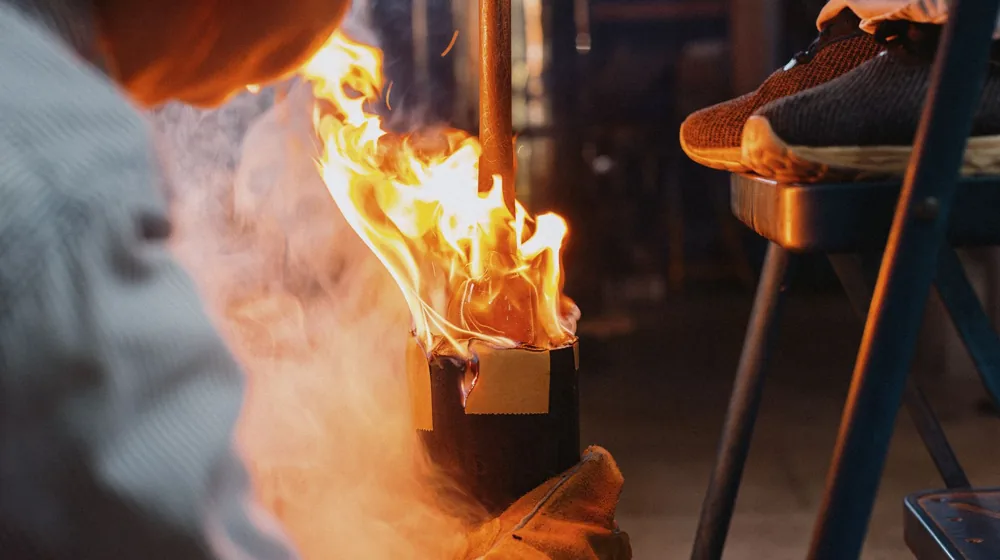

하루 만에 완성하는 옻칠 식기 원데이클래스 가격부터 주의사항까지 총정리
사진: Thirdman / Pexels (무료 이미지, 출처 표기)
K-공예의 매력, 나만의 옻칠 식기 만들기

따뜻한 나무 질감에 은은한 빛을 더하는 옻칠 식기는 식탁의 분위기를 차분하게 만들어 줍니다. 최근에는 정성스러운 손길로 세상에 단 하나뿐인 나만의 식기를 만드는 옻칠 원데이클래스가 큰 인기를 끌고 있습니다. 평소 그릇이나 인테리어 소품에 관심이 많았다면 한 번쯤 도전해보고 싶으셨을 텐데요.
전통 공예라는 말에 지레 겁먹을 필요는 없습니다. 초보자도 강사의 세심한 지도 아래 2~3시간이면 근사한 수저 세트나 디저트 접시를 완성할 수 있기 때문입니다. 클래스 신청 전에 꼭 알아두어야 할 비용, 제작 과정, 그리고 가장 걱정하시는 옻 알레르기 예방법까지 핵심 정보만 골라 정리해 드립니다.
원데이클래스로 만드는 옻칠 식기 제작 과정
보통 원데이클래스에서는 미리 기본 형태가 잡혀 있는 목기(나무 식기) 위에 옻칠을 입히는 작업을 진행합니다. 공방이나 클래스 커리큘럼에 따라 세부 순서는 조금씩 다를 수 있지만, 대략적인 흐름은 다음과 같습니다.
- 목기 선택 및 다듬기: 사용할 숟가락, 젓가락, 접시 등의 나무 식기를 고르고 표면을 부드럽게 사포질합니다.
- 생옻칠 입히기: 천연 옻을 스펀지나 붓을 이용해 목기 표면에 얇고 고르게 펴 바릅니다.
- 닦아내기(칠닦기): 옻이 나무 틈새로 잘 스며들도록 면 천으로 가볍게 닦아내는 과정을 반복합니다.
- 건조 및 마감: 옻은 일정한 온도와 습도가 유지되는 건조실에서 굳혀야 하므로, 당일 가져가지 못하고 보통 일주일 뒤 택배로 받거나 재방문하여 수령합니다.
공방 선택 전 꼭 확인해야 할 비교 포인트
나에게 맞는 클래스를 찾기 위해서는 비용과 소요 시간, 그리고 제공되는 기본 식기의 종류를 꼼꼼히 비교해 보아야 합니다. 다음은 서울 및 수도권 주요 공방들의 평균적인 기준을 정리한 표입니다.
※ 위 비용 및 상세 일정은 2026년 기준 평균치이며, 공방의 규모나 사용하는 옻의 종류(천연 옻 vs 개량 옻)에 따라 차이가 있을 수 있습니다. 정확한 금액은 예약하고자 하는 공방의 공식 채널을 통해 다시 한번 확인하시는 것이 좋습니다.
가장 걱정되는 '옻 오름(알레르기)' 예방하는 법
옻칠 클래스를 망설이는 가장 큰 이유는 바로 옻 알레르기(피부염)에 대한 두려움 때문일 것입니다. 옻의 주성분인 '우루시올(Urushiol)'은 피부에 닿으면 가려움증이나 붉은 발진을 유발할 수 있습니다. 하지만 몇 가지 안전 수칙만 잘 지키면 안전하게 체험할 수 있습니다.
- 이중 장갑 착용하기: 공방에서 제공하는 면장갑을 끼고 그 위에 니트릴(고무) 장갑을 덧껴 피부 노출을 원천 차단합니다.
- 긴소매 옷 착용: 작업 중 팔뚝 등에 옻이 튈 수 있으므로 반드시 소매가 긴 옷을 입고 앞치마와 토시를 착용합니다.
- 상비약 준비하기: 평소 알레르기 체질이거나 피부가 예민하다면 클래스 참여 30분 전에 약국에서 항히스타민제를 처방 또는 구매하여 미리 복용하는 것이 도움이 됩니다.
최근 많은 공방에서는 알레르기 반응을 최소화하도록 정제된 정제 옻이나 캐슈(Cashew) 칠 등 대체 도료를 사용하기도 하므로, 걱정이 된다면 예약 전 강사에게 미리 문의해 보시는 것을 권장합니다.
오랫동안 윤기 나게 쓰는 옻칠 식기 관리법
정성껏 만든 옻칠 식기는 관리에 조금만 신경 쓰면 대를 이어 쓸 수 있을 만큼 내구성이 뛰어납니다. 옻칠은 천연 방부 및 항균 효과가 있어 위생적이지만, 뜨거운 열과 강한 수분에는 주의가 필요합니다.
부드러운 수세미를 사용해 미지근한 물로 가볍게 설거지한 뒤, 마른 행주로 물기를 바로 닦아 그늘진 곳에 보관해 주세요. 전자레인지나 식기세척기, 오븐 사용은 옻칠막을 들뜨게 하므로 절대 피해야 합니다. 정성이 들어간 만큼 일상 속에서 아끼며 쓰는 재미를 느껴보시기 바랍니다.
🔗 이 글도 함께 보면 좋아요: 홈트레이닝 초보자 가이드: 돈 안 쓰고 하루 15분으로 시작하는 법
관련 추천 상품
이 포스팅은 쿠팡 파트너스 활동의 일환으로, 이에 따른 일정액의 수수료를 제공받습니다.